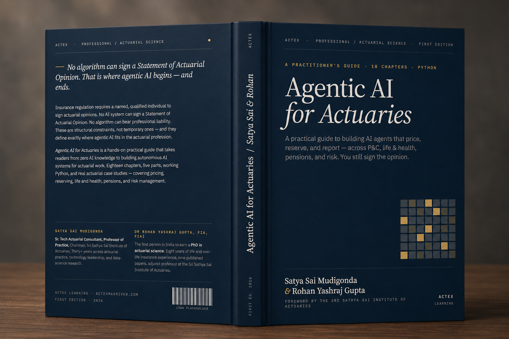

A practical guide to building AI agents that price, reserve, and report — across P&C, life & health, pensions, and risk. You still sign the opinion.
Available later this year · Free from ACTEX
Thank you — we will email you when the book is released.
In collaboration with the Sri Sathya Sai Institute of Actuaries

Satya Sai Mudigonda & Rohan Yashraj Gupta · ACTEX Learning · First Edition 2026
No algorithm can sign a Statement of Actuarial Opinion. That is where agentic AI begins — and ends.
From AI foundations to autonomous actuarial systems: the book takes a reader with no prior AI exposure to building, deploying, and governing agentic systems for actuarial work — with real case studies across pricing, reserving, life & health, pensions, and risk.
Each opens with a vignette grounding the concept in a concrete actuarial situation.
Foundations, LLMs, agentic architecture, actuarial practice, production & governance.
Pricing & underwriting, reserving & claims, life & pensions, risk & compliance.
Runnable Python for every listing in Parts III–V, from your first agent to governance dashboards.
What actuaries need to know
It is the first Monday of January, and a pricing actuary at a mid-size composite insurer sits down to renew a commercial property portfolio of 340 accounts. By Friday, working in the traditional way, she has a preliminary indication for sixty of them. Down the corridor, a colleague using AI-assisted extraction and first-pass analysis has the full portfolio ready for peer review by Tuesday afternoon. The difference is not talent. Both hold the same fellowship qualification. The difference is the system.
Artificial intelligence is not one technology. It is a family of techniques, with different histories, different assumptions, and very different reliability profiles. For an actuary deciding what to adopt and what to defer, the first task is to learn the taxonomy. A pricing actuary using a generalised linear model is using a form of machine learning, even if the textbook calls it statistical regression. A claims handler triaging photographs of vehicle damage is using a convolutional neural network. A reserving actuary asking a chatbot to draft commentary on loss development is using a large language model. These are different tools, with different failure modes.
No AI system can sign a Statement of Actuarial Opinion. No algorithm can bear professional liability. No model can be called before a regulatory tribunal to explain its reasoning under oath. These are structural constraints, not temporary ones. They define a permanent boundary between what AI can do — process data, run models, draft reports — and what actuaries must do — exercise judgment, bear accountability, maintain professional standards.
Chapter 1 continues in the full edition
An open repository carries working code for every listing in Parts III–V — your first agent in Chapter 9 through governance dashboards in Chapter 17. All datasets are synthetic; Meridian Re, the reinsurer the case studies follow, is a fictional composite. Every example runs on a free-tier model key.
The difference is not talent. Both hold the same fellowship qualification. The difference is the system.
Foreword by the Sri Sathya Sai Institute of Actuaries